Діагностика · журнал «ДентАрт» 2015 №1 (78)
Волоконно-оптична трансілюмінація як діагностичний метод практичної стоматології
USING FIBER-OPTIC TRANSILLUMINATION AS A DIAGNOSTIC AID IN DENTAL PRACTICE
В еру цифрових діагностичних технологій клініцистам, які прагнуть застосовувати сучасні цифрові технології при діагностиці та лікуванні пацієнтів, важливо не упустити можливості використовувати перевірені і дієві методики. Один із прикладів додаткового діагностичного методу, що не потребує додаткової цифрової підтримки, — це волоконно-оптична трансілюмінація.
Можливості застосування волоконно-оптичної трансілюмінації: додатковий діагностичний засіб для виявлення контактного і оклюзійного карієсу в передніх і бічних зубах; виявлення твердих зубних відкладень; виявлення профарбованих країв композитних реставрацій; визначення переломів горбиків і тріщин зуба; інструмент для освітлення ендодонтичного доступу і кореневих каналів у порожнині зуба під час ендодонтичного лікування; інструмент для поліпшення діагностики уражень м’яких тканин; для визначення тріщин у суцільнокерамічних реставраціях перед цементуванням; для клінічного визначення переломів і тріщин у суцільнокерамічних реставраціях і природних зубах; для визначення глибини профарбовування і призначення належного лікування.1
Волоконна оптика (оптичне волокно) — це гнучкі і тонкі циліндричні волокна з високоякісного оптичного скла або пластику. Теорія оптичних волокон ґрунтується на одиночному оптичному волокні, яке складається зі скла або пластику із зовнішньою оболонкою з матеріалу з більш низьким рівнем рефракції. Оскільки серцевина має вищий індекс рефракції, світлові промені відбиваються від оболонки назад у серцевину. Цей феномен ґрунтується на законі Снелла і називається повним внутрішнім віддзеркаленням. Окремі волокна збираються в групи і формують оптичний пучок.1, 2 Ці волокна можуть бути досить малі — 0,01 мм для скла та 0,1 мм для пластику.2 Волоконна оптика використовувалася в стоматології як засіб додаткового підсвічування в наконечниках і скейлерах, лупах.
Стоматологічна медична трансілюмінація можлива завдяки проходженню світла крізь м’які тканини. Багато хто пам’ятає застосування трансілюмінації, коли діти на Геловін світять ліхтариком крізь підборіддя і м’які тканини, тим самим створюючи моторошне червоне світіння через поглинання еритроцитами світла з іншими довжинами хвиль. Лікарі широко використовують трансілюмінацію для діагностики новоутворень кистей і виявлення порожнин, а також для дослідження грудей.3, 5 У стоматології волоконно-оптична трансілюмінація спочатку асоціювалася з діагностикою карієсу. Яскраве світло може просвічувати прозорі тканини зуба, що дає можливість визначити зміни кольору зуба, наявність тріщин, переломів та інших дефектів. Більшість каріозних уражень зазвичай видимі. На каріозні ураження оклюзійної або щічної/язичної поверхонь припадає 90% усіх каріозних уражень у дітей і підлітків.6 Приблизно 60% карієсу припадає на 20% населення, і менш ніж 5% дорослих взагалі не мають каріозних уражень.7 Карієс — одне із звичайних одиничних хронічних захворювань у дітей. При зниженні активності карієсу на контактних поверхнях збільшуються ураження оклюзійної поверхні і тканин, однак контактні поверхні менш доступні для діагностики.
Точна діагностика каріозних уражень гладкої міжконтактної емалі та дентину — складне завдання для клініциста. Карієс контактних поверхонь зазвичай діагностується з різними інтраоральними пристосуваннями, включаючи візуалізацію дисколоритів поверхневої емалі з використанням діагностичного зонда для визначення шорсткості поверхні і наявності порожнин у комбінації з рентгенографією зубів у прикусі.8-11 У більшості клінічних випадків доступ для діагностики дистальної проксимальної поверхні дуже обмежений. Рентгенографія — важливий діагностичний інструмент для визначення контактного карієсу,12, 13 і рентгенографія зубів у прикусі є найбільш широко використовуваним засобом для діагностики карієсу проксимальних поверхонь зубів. На нинішній момент діагностика карієсу контактних поверхонь з використанням рентгенографії показує точність, що коливається від 40% до 65%.14-16 Також частота використання рентгенографії для діагностики варіюється залежно від лікаря,17 оскільки стоматологи як професіонали зацікавлені у зменшенні впливу іонізуючого рентгенвипромінювання на своїх пацієнтів. Широко відомо і доведено, що дозована іонізуюча радіація є кумулятивною у своїх ефектах і ризиках.18, 19
Щоб знизити вплив на пацієнта іонізуючого випромінювання, клініцисти можуть використовувати волоконно-оптичну трансілюминацію для безпечної діагностики важкодоступних поверхонь під час клінічного дослідження.20 Волоконно-оптична трансілюмінація — безпечна, мінімально інвазивна і безболісна процедура, яка може легко застосовуватися на повсякденному прийомі. При використанні прямого променя яскравого білого світла, спрямованого крізь вестибулярну та контактні поверхні сухого зуба, можна візуалізувати зміни його кольору, текстури поверхні і наявність або відсутність тіней усередині зуба.17
У ряді досліджень волоконно-оптична трансілюмінація була визначена значущим індикатором гістологічної наявності або відсутності бактеріально інфікованих зубних структур, зі специфічністю і чутливістю, еквівалентною або навіть вищою, ніж при рентгенографії.21-24 Чутливість тесту, тобто справжній позитивний показник, — це відсоток людей, у яких ідентифіковано цей стан. Специфічність обмежує пропорції негативних показників, тобто процентне співвідношення людей, у яких цей стан визначено не було. В ідеалі, діагностичний тест повинен мати 100% чутливість і 100% специфічність; при цьому ймовірності того, що хто-небудь із здорової групи хворий, не було б. З досвіду, обстеження припускає діагностику контактного карієсу, засновану на комбінації досліджень, а не на єдиному методі, і на сукупності рентгенографії, волоконно-оптичної трансілюмінації та клінічного обстеження, що дає точніший результат.25-28
Техніки використання волоконно-оптичної трансілюмінації для обстеження зубів
Традиційно використання яскравого світла — найліпший діагностичний інструмент для освітлення порожнини рота і зубів. У деяких випадках стоматологи використовують полімеризаційні лампи для трансілюмінації зубів, але в недавніх дослідженнях було доведено, що це має значний ризик, пов’язаний зі шкідливим впливом синього світла, яке може стати причиною ушкоджень сітківки і макулярної дегенерації.29-31 Рекомендовано використовувати спеціальні джерела світла з малими апертурами — 3 мм або менше, оскільки вони забезпечують точкове світло, в результаті якого виходить чіткіше зображення для візуалізації. Ці невеликі джерела виробляють біле світло, яке може бути використане як непряме джерело для волоконно-оптичної трансілюмінації. Раніше пристрої для трансілюмінації мали вигляд великих коробок з джерелами світла, які вимагали охолодження за допомогою вентиляторів і стаціонарних джерел живлення. Завдяки останнім діодам, що випромінюють світло (LED), пристрої для трансілюминації стали маленькими, компактними і живляться енергією від батарейок. Техніка зміщення кута світла для зміни освітленості дає можливість отримати точніше зображення зубів у різних позиціях. Волоконно-оптична трансілюмінація працює завдяки різниці у просвічуванні нормальної емалі та дентину в порівнянні з карієсом, зубними відкладеннями, реставраційним матеріалом і зовнішнім дисколоритом зубів.1 Карієс, який відображається як тінь усередині зуба, має нижчий показник світлопровідності, ніж тверді тканини зуба. Зубний камінь має вигляд затемненої зони на поверхні зуба. Реставраційні матеріали, що імітують колір зуба, також можна легко відрізнити від нормальних тканин за допомогою волоконно-оптичної трансілюмінації.
Визначення карієсу контактних поверхонь передніх зубів
Для зубів як верхньої, так і нижньої щелепи при візуалізації контактного карієсу передніх зубів джерело світла має розміщуватися в ділянці шийки з вестибулярного боку зуба, а поверхню потрібно досліджувати з язичного боку за допомогою дзеркала (рис. 1). У деяких випадках через невелику товщину нижніх різців джерело світла можна розмістити і з язичного боку.
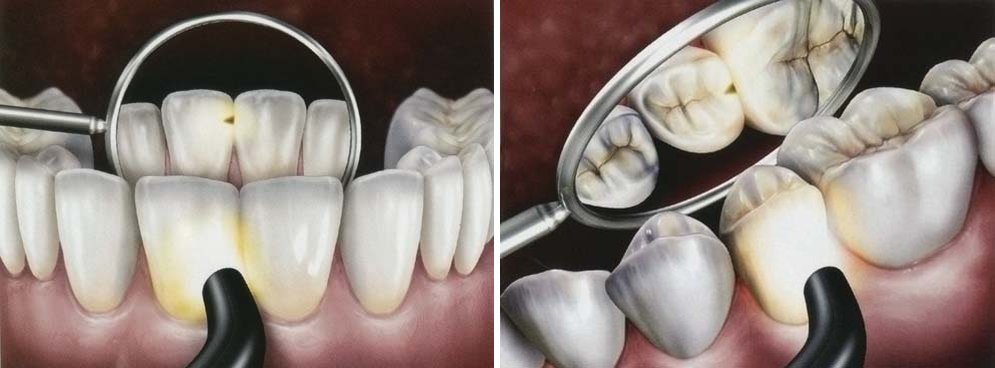
Визначення карієсу контактних поверхонь бічних зубів
Для візуалізації контактного карієсу бічних зубів джерело світла слід розміщувати у пришийковій ділянці зуба зі щічного або язичного боку. Світло проходить через тканини шийки зуба, а потім відбивається оклюзійно. Карієс має вигляд темної тіні на оклюзійній поверхні (рис. 2).
Нещодавно був розроблений інноваційний тонкий і гнучкий волоконний кінчик для визначення контактного карієсу бічних зубів (Мікролюкс Проксімал Каріес Лайт Гайд, АдДент, Інк./Microlux Proximal Caries Light Guide, AdDent, Inc.). Цей кінчик товщиною 0,75 мм також чудово впорується з візуалізацією усть кореневих каналів у порожнині зуба. Для діагностики карієсу тонкий кінчик світловода поміщається у зубоясенную борозну нижче рівня проксимального контакту під ясенний край. Рис. 3 відображає вигляд оклюзійної поверхні. Цей метод завжди показує карієс з вищою роздільною здатністю, ніж стандартні волоконно-оптичні світловоди.
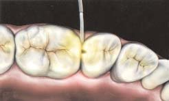
Клінічні випадки
Додаткове визначення карієсу
Передні зуби. Для верхніх передніх зубів та ікол нижньої щелепи найліпша візуалізація досягається при розташуванні світловода під правильним кутом до вестибулярної поверхні, просвічуючи зуб до язичної поверхні (фото 1). Язичну поверхню оглядають за допомогою дзеркала (фото 2). Розташування світловода з язичної поверхні не дає оптимального діагностичного зображення. Як зафіксовано на фото 3, початкове препарування підтверджує поширення карієсу, яке було візуалізоване за допомогою волоконно-оптичної трансілюмінації.
Карієс дистальних поверхонь ікол складніше візуалізувати клінічно і радіографічно (фото 4-6). Використання волоконно-оптичної трансілюмінації в комбінації з клінічним і рентгенографічним дослідженням може дати точніший діагноз (фото 7). Для тонших і пряміших різців нижньої щелепи джерело світла з язичного боку може забезпечити чудовий діагностичний вигляд (фото 8).
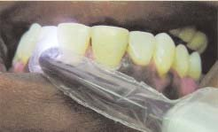
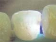
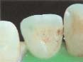
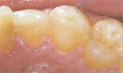
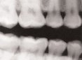
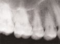
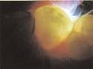
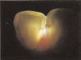
Бічні зуби. Візуалізація контактного карієсу бічних зубів вимагає спочатку правильного розміщення світловода під правильним кутом до вестибулярної поверхні, нижче контактного пункту. Найкращий діагностичний вигляд дає спеціалізований тонкий волоконно-оптичний кінчик, який може бути поміщений між зубами. Контактний карієс бокових зубів має діагностуватися за допомогою клінічного дослідження (фото 9), рентгенографії в прикусі і волоконно-оптичної трансілюмінації (фото 10). Як показано на фото 11, остаточне препарування і видалення карієсу підтверджує достовірність волоконно-оптичного зображення поширеності ураження. Звичайні волоконно-оптичні світловоди також можуть послужити додатковим інструментом для діагностики інтерпроксимального карієсу бічних зубів.
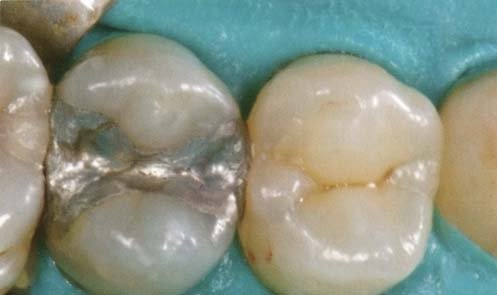
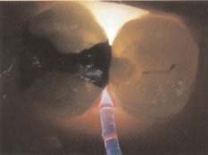
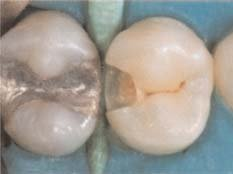
Визначення інших патологій зубів
Гіпоплазія емалі. Поверхневі дисколорити емалі можуть бути виявлені за допомогою волоконно-оптичної трансілюмінації шляхом визначення глибини дисколориту і ступеня його опаковості. Вид дисплазії емалі, що зустрічається у практиці стоматологів найчастіше, — це флюороз зубів32 (фото 12). При використанні волоконно-оптичної трансілюмінації визначається глибина і поширеність опаковості на поверхні емалі (фото 13 і 14).
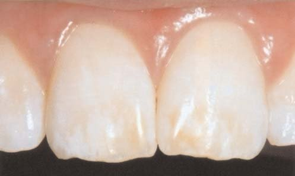
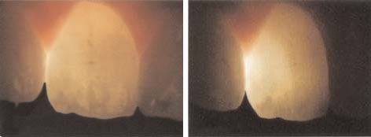
Неповні переломи зубів. Зазвичай неповні переломи зубів виявляються у пацієнтів, що мають скарги на біль при жуванні33 (фото 15). Всебічна оцінка включає опитування пацієнта і дослідження прикусу. Скарги пацієнта можуть бути підтверджені шляхом візуалізації неповного перелому за допомогою волоконно-оптичної трансілюмінації (фото 16). У деяких випадках неповні переломи можуть бути не переломами горбиків, а мезіодистальними вертикальними переломами стінок порожнини зуба. Довести наявність фрактури можна після видалення реставрації та проведення трансілюмінації зуба. Важливо використовувати різні напрямки світлового потоку для кращої візуалізації неповних переломів зубів.
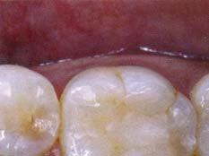
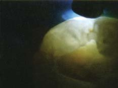
Інший приклад — це випадок визначення неповного перелому зуба при препаруванні, без наявності симптомів, необхідних для складання прогнозу (фото 17). Волоконно-оптична трансілюмінація використана для демонстрації пацієнтові прогнозу лікування (фото 18). У цьому випадку була виконана композитна реставрація і пацієнт призначений на подальше спостереження.
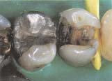
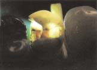
Трансілюмінація усть кореневих каналів
У деяких випадках, що вимагають підготовки ендодонтичного доступу або виявлення усть кореневих каналів, використання волоконно-оптичного світловода у пришийковій зоні під кламером дозволяє висвітлити внутрішню частину зуба для кращої візуалізації кореневих каналів (фото 19).
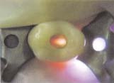
Дефекти композитних реставрацій
Під час препарування зубів, особливо за наявності дефектів композитних реставрацій, буває складно візуалізувати повне видалення старого композиту. Використання волоконно-оптичної трансілюмінації дозволяє полегшити візуалізацію оптичної різниці між тканинами зуба і композитом, а також побачити межі старої реставрації, яку необхідно видалити (фото 20, 21). Також, якщо композити мають профарбовані краї, трансілюмінація дозволяє побачити не тільки їх, а й поширення вторинного карієсу всередину зуба.
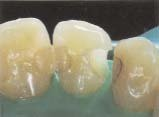
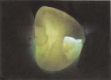
Висновки
Звичайні клінічні дослідження і рентгенографія не забезпечують достатньої інформації для діагностики різних патологій порожнини рота. В останні роки велика кількість цифрових пристроїв як засобів для додаткової діагностики стоматологічних патологій дозволила лікарям поповнити свій діагностичний арсенал. Крім захоплень новими технологіями, клініцисти повинні пам’ятати звичайні перевірені методи, які також можуть допомогти.
Волоконно-оптична трансілюмінація належить до категорії засобів, які не потребують додаткової цифрової підтримки. Просте просвічування яскравим світлом прозорих тканин зуба із застосуванням загальноприйнятих технік дозволяє клініцистам розширити їхні можливості у визначенні точного діагнозу. Більше того, волоконно-оптична трансілюмінація виступає в ролі додаткового інструменту під час лікування. Сфери застосування трансілюмінації:
- додатковий діагностичний засіб для визначення інтерпроксимального карієсу в передніх і бічних зубах;
- визначення зубних відкладень;
- визначення профарбованих країв композитних матеріалів, виявлення переломів і тріщин зубів;
- освітлення ендодонтичного доступу і усть кореневих каналів у порожнині зуба під час ендодонтичного лікування;
- поліпшення визначення уражень м’яких тканин;
- визначення тріщин суцільнокерамічних реставрацій перед цементуванням;
- клінічне виявлення переломів і тріщин суцільнокерамічних реставрацій і натуральних зубів;
- визначення глибини і поширення зовнішніх профарбовувань для призначення адекватного лікування.
Переклад Романа Савости
Література
- Friedman J, Marcus MI. Transillumination of the oral cavity with use of fiber optics. J Am Dent Assoc. 1970;80(4):801-809.
- DeCusatis C, DeCusatis CJ. Fiber, cables, and connectors. In: DeCusatis C, DeCusatis CJ, eds. Fiber Optic Essentials. San Diego, CA: Elsevier; 2006:1-28.
- Erne HC, Gardner TR, Strauch RJ. Transillumination of hand tumors: a cadaver study to evaluate accuracy and intraobserver reliability. Hand (N Y). 2011;6(4):390-393.
- Dixit SS, Kim H, Comstock C, Faris GW. Near infrared transillumination imaging of breast cancer with vasoactive inhalation contrast. Biomed Opt Express. 2010;1(1):295-309.
- Sharan R, Thankappan K, Iyer S, et al. Intraoperative transillumination to determine the extent of frontal sinus in subcranial approach to anterior skull base. Skull Base. 2011;21(2):71-74.
- Ripa LW, Leske GS, Sposato A. The surface-specific caries pattern of participants in a school-based fluoride mouthrinsing program with implications for the use of sealants. J Public Health Dent. 1985;45(2):90-94.
- Diagnosis and Management of Dental Caries Throughout Life. NIH Consensus Statement. Bethesda, MD: National Institutes of Health. 2001;18(1):1-24.
- Gordan VV, Riley JL 3rd, Carvalho RM, et al. Methods used by Dental Practice-based Research Network (DPBRN) dentists to diagnose dental caries. Oper Dent. 2011;36(1):2-11.
- Roberson TM. Cariology: the lesion, etiology, prevention and control. In: Roberson TM, Heymann HO, Swift EJ Jr, eds. Sturdevant’s Art and Science of Operative Dentistry. 5th ed. St. Louis, MO: Mosby Elsevier; 2006:67-134.
- Nielsen LL, Hoernoe M, Wenzel A. Radiographic detection of cavitation in approximal surfaces of primary teeth using a digital storage phosphor system and conventional film, and the relationship between cavitation and radiographic lesion depth: an in vitro study. Int J Paediatr Dent. 1996;6(3):167-172.
- Davies GM, Worthington HV, Clarkson JE, et al. The use of fibre-optic transillumination in general dental practice. Br Dent J. 2011;191(3):145-147.
- Kidd EA, Pitts NB. A reappraisal of the value of bitewing radiograph in the diagnosis of posterior approximate caries. Br Dent J. 1990;169(7):195-200.
- Pitts NB. Advances in radiographic detection methods and caries management rationale. In: Stookey GK, ed. Early Detection of Dental Caries: Proceedings of the First Annual Indiana Conference. Indianapolis, IN: Indiana University School of Dentistry; 1996.
- Espelid I. Radiographic diagnoses and treatment decisions on approximal caries. Community Dent Oral Epidemol. 1986;14(5):265-270.
- Espelid I, Tveit AB. Clinical and radiographic assessment of approximal carious lesions. Acta Odontol Scand. 1986;44(1):31-37.
- Mileman PA, van der Weele LT. Accuracy in radiographic diagnosis: Dutch practitioners and dental caries. J Dent. 1990;18(3):130-136.
- Dental Treatment. GDS Quarterly Statistics. January-March, 1999. DPB.
- Brambilla M, De Mauri A, Leva L, et al. Cumulative radiation dose from medical imaging in chronic adult patients. Am J Med. 2013;126(6):480-486.
- Kleinerman RA. Cancer risks following diagnostic and therapeutic radiation exposure in children. Pediatr Radiol. 2006;36(suppl 2):121-125.
- Pitts NB. Diagnostic tools and measurements—impact on appropriate care. Community Dent Oral Epidemiol. 1997;25(1):24-35.
- Pine CM. Fibre-optic transillumination (FOTI) in caries diagnosis. In: Stookey GK, ed. Early Detection of Dental Caries: Proceedings of the First Annual Indiana Conference. Indianapolis, IN: Indiana University School of Dentistry; 1996.
- Peers A, Hill FJ, Mitropoulos CM, Holloway PJ. Validity and reproducibility of clinical examination, fibre-optic transillumination, and bite-wing radiology for the diagnosis of small approximal carious lesion: an in vitro. Caries Res. 1993;27(4):307-311.
- Reddy VV, Sugandhan S. A comparison of bitewing radiography and fibreoptic illumination as adjuncts to the clinical identification of approximal caries in primary and permanent molars. Indian J Dent Res. 1994;5(2):559-564.
- Cortes DF, Ekstrand KR, Elias-Boneta AR, Ellwood RP. An in vitro comparison of the ability of fibre-optic transillumination, visual inspection and radiographs to detect occlusal caries and evaluate lesion depth. Caries Res. 2000;34(6):443-447.
- Hintze H, Wenzel A, Danielsen B, Nyvad B. Reliability of visual examination, fibre-optic transillumination, and bite-wing radiography, and reproducibility of direct visual examination following tooth separation for the identification of cavitated carious lesions in contacting approximal surfaces. Caries Res. 1998;32(3):204-209.
- Choksi SK, Brady JM, Dang DH, Rao MS. Detecting approximal dental caries with transillumination: a clinical evaluation. J Am Dent Assoc. 1994;125(8):1098-1102.
- Mialhe FL, Pereira AC, Pardi V, de Castro Meneghim M. Comparison of three methods for detection of carious lesions in proximal surfaces versus direct visual examination after tooth separation. J Clin Pediatr Dent. 2003;28(1):59-62.
- Strassler HE, Sensi LG. Technology-enhanced caries detection and diagnosis. Compend Contin Educ Dent. 2008;29(8):464-470.
- Wielgus AR, Roberts JE. Retinal photodamage by endogenous and xenobiotic agents. Photochem Photobiol. 2012;88(6):1320-1345.
- Wielgus AR, Collier RJ, Martin E, et al. Blue light induced A2E oxidation in rat eyes—experimental animal model of dry AMD. Photochem Photobiol Sci. 2010;9(11):1505-1512.
- Shaban H, Richter C. A2E and blue light in the retina: the paradigm of age-related macular degeneration. Biol Chem. 2002;383(3-4):537-545.
- Strassler HE, Griffin A, Maggio M. Management of fluorosis macro- and microabrasion. Dent Today. 2011;30(10):91-97.
- Ailor JE Jr. Managing incomplete tooth fractures. J Am Dent Assoc. 2000;131(8):1168-1174.